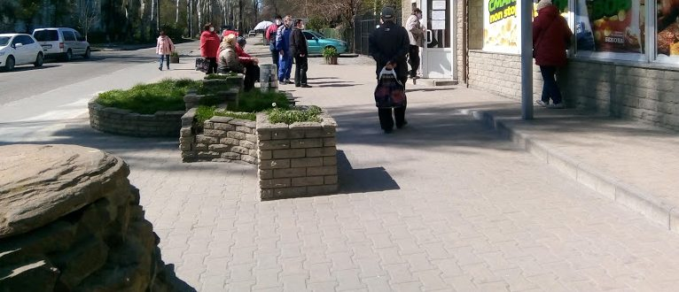
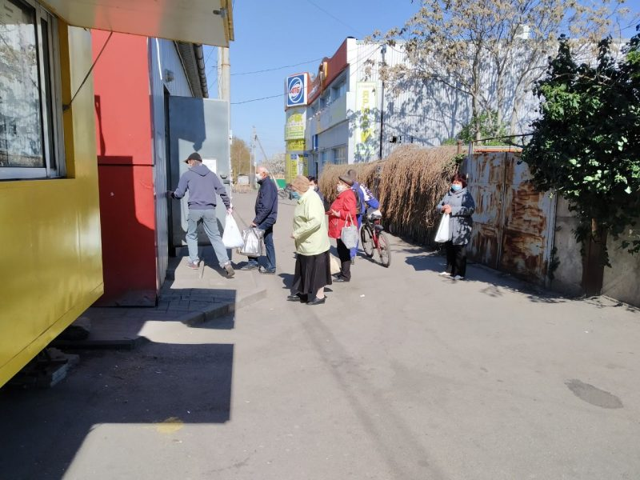
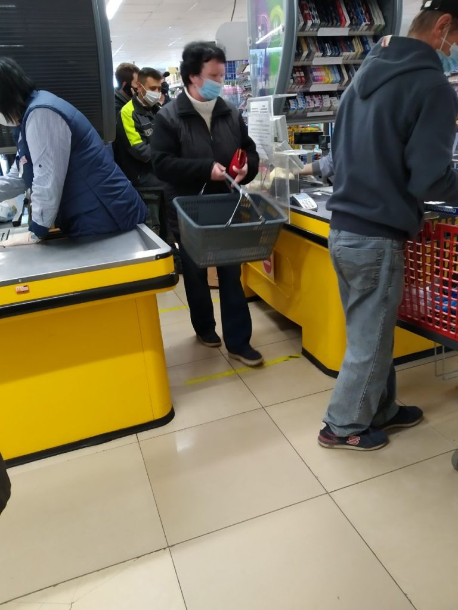
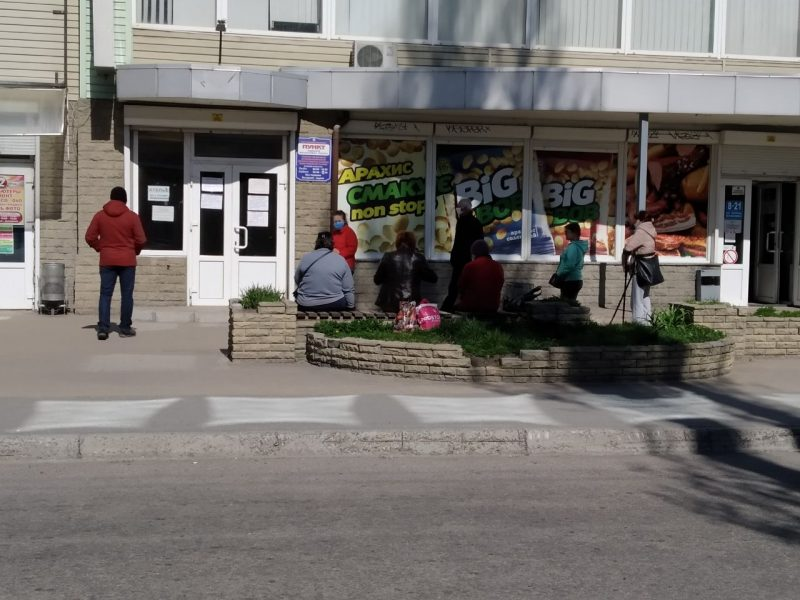
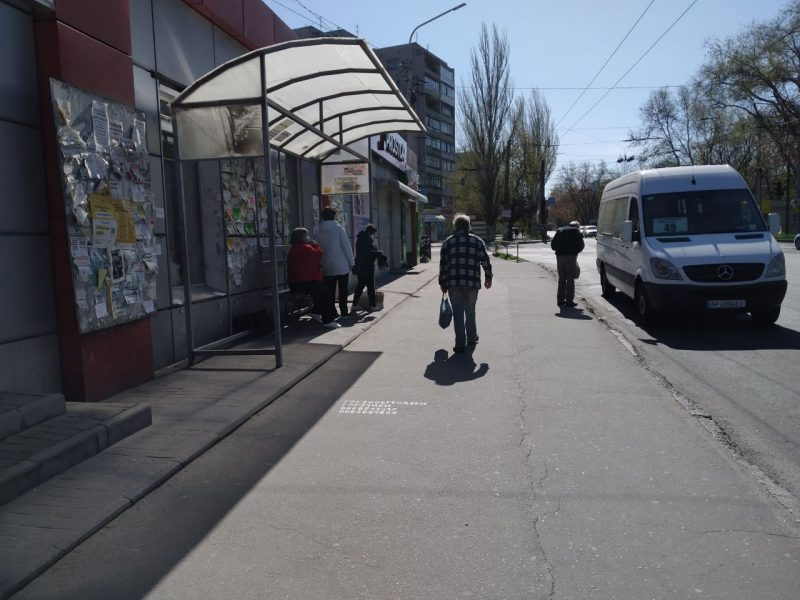
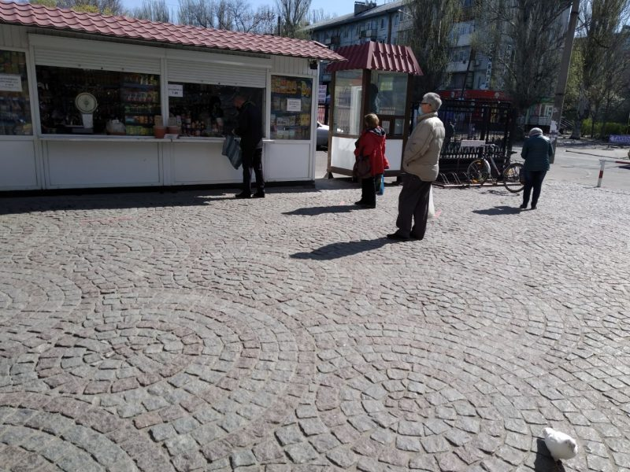
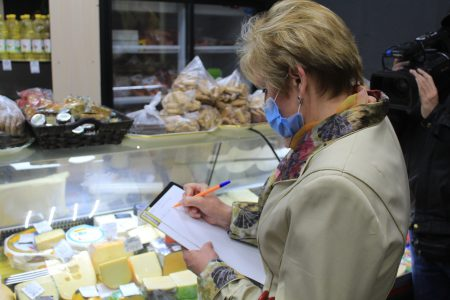

Дистанция - лучшая защита от коронавируса: соблюдают ли запорожцы меры предосторожности
С 6 апреля в Украине ужесточили карантинные меры.Теперь в общественных местах нужно обязательно находиться в маске и иметь при себе документ, удостоверяющий личность.Коснулись ограничения и прогулок в городских парках и скверах.
При соблюдении определенных правил запорожцы пока могут спокойно передвигаться по улицам.Однако это не повод гулять.Для собственной безопасности лучше не выходить из дома без необходимости.
Самые популярные места, которые посещают запорожцы во время карантина — магазины и аптеки.«Индустриалка» проверила, соблюдают ли запорожцы меры предосторожности в общественных местах.
Покупателей в магазины пускают исключительно в защитных масках.В небольшие магазины — не больше 10 человек (а если магазинчик совсем маленький, то вообще по одному).

Возле касс на полу в торговых точках сделали разметку, согласно которой люди должны соблюдать дистанцию.Но на практике за этим почти нигде не следят.Покупатели стоят в очередях практически вплотную, как и до карантина.Да и во многих магазинах разметка сделана скорее «для вида», так как расстояние между ней визуально даже меньше 1 метра.(Согласно рекомендациям ВОЗ, безопасная дистанция должна составлять 1,5 — 2 метра.1 метр — это минимум).
Да и сами запорожцы неохотно соблюдают дистанцию.Так возле магазинов, в которые пускают ограниченное количество людей, образовываются очереди на улицах.Далеко не все запорожцы в таких очередях стоят на расстоянии от других.Чаще — собираются в группки и общаются.При этом все они в защитных масках, но чаще всего самодельных.Степень защиты таких масок очень низкая.
На остановках общественного транспорта людей практически нет.Но те, кто есть дистанцию особо не соблюдают.
О том что лучшая защита от коронавируса — это дистанция, говорят и представители ВОЗ.Так, представитель Всемирной организации здравоохранения Мелита Вуйнович сказала, что физическая дистанция защищает от коронавируса лучше, чем маска.По ее мнению, использование масок бесполезно, если игнорировать другие методы защиты.
«Если здоровый человек не находится в одном помещении с больным, то маска ему не нужна.Если он находится в толпе, тогда да.Однако физическая дистанция более защищает от заражения, чем маска», — сказала Мелита Вуйнович.

Напоминаем, что по состоянию на 13 апреля в Запорожской области зафиксировали 85 случаев коронавируса.Из них в Запорожье — 41.
Posted On: 2020-04-13T13:15:00
Posted By: Антонина Фролова





Content Date: 2020-04-13
Download Date: 2021-04-21
Document ID: L0C04AMTU